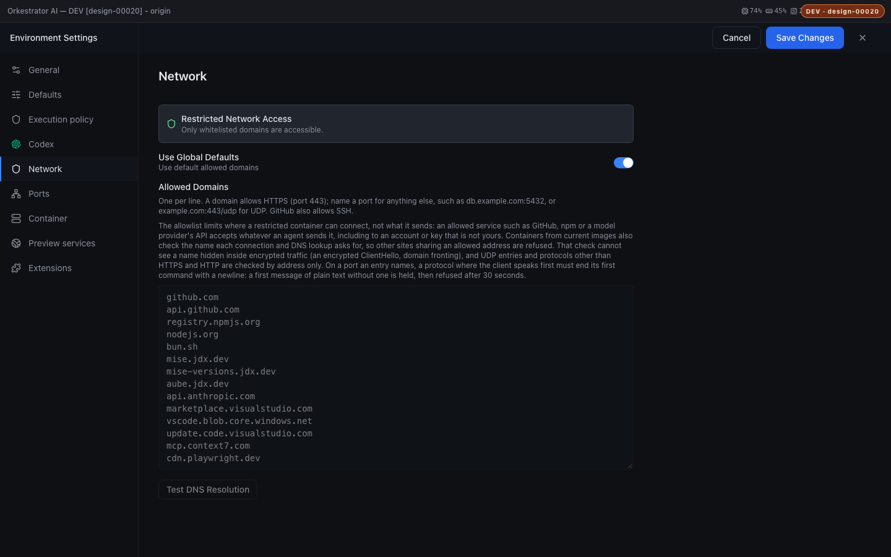
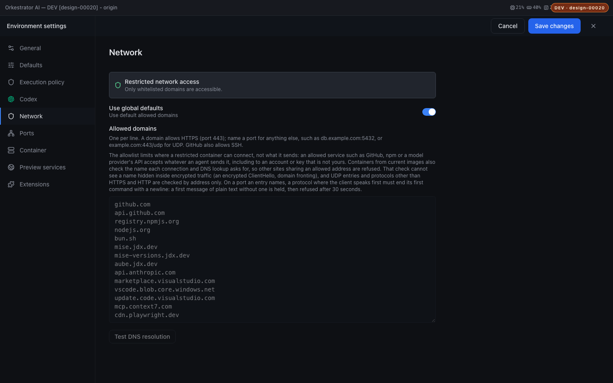
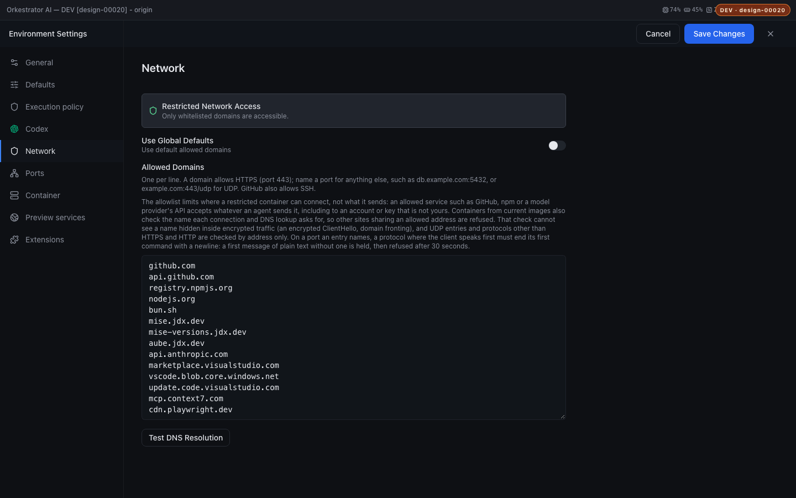

Design tasks / 00020
00020 · Settle label casing: sentence case for buttons, menus and headings
Problem
Examples of Title Case: “Use Global Defaults”, “Resume Session”, “Restricted Network Access”, “Full Network Access”, “Connect Linear”, “Push Changes”, “New Terminal Tab”, “New Root Terminal”, “New Browser Tab”, “Merge Pull Request”. Sentence case: “New terminal”, “New folder”, “Remove machine”, “Open pipeline”, “Open design”. The same action can be spelled both ways in different places.
Find every instance
grep -rnoE --include=*.tsx ">[A-Z][a-z]+ [A-Z][a-z]+( [A-Z][a-z]+)?<" apps/web/src | grep -v "\.test\."Scope
| Where | What |
|---|---|
apps/web/src (all JSX labels, aria-labels, toasts, dialog titles) |
run the grep; then also look at title=, label= and
toast.*( strings
|
Proper nouns and product terms |
keep capitalized: Multi Review, Coordinator, Claude Code, GitHub, Linear |
Approach
- Write the casing rule into DESIGN.md first (Do’s), with the proper-noun and product-term exceptions.
- Convert labels, buttons, menu items, tab names and dialog titles to the rule. Work area by area (settings, sidebar, dialogs, toolbar) so each PR is reviewable.
- Update tests and e2e selectors that match the old strings.
Decisions
One option is marked recommended. Record the option you chose in Notes.
Casing convention
Required evidence: before and after
Every slot needs a before image (captured first, before editing any code) and an
after image. Use the same profile, fixture data, theme, viewport and zoom for both.
Save PNGs under design/images/00020/ using the exact file names shown. See
How to capture.
Environment network settings desktop 1440×900
Open an environment’s network settings (Restricted / Full Network Access).


Network settings with “Use global defaults” desktop 1440×900
Open a container environment’s settings, select Network, and turn off “Use global defaults” so the allowed-domains field is editable.
Coverage exception. This Network pair replaces the requested Agent settings pair for the shared-defaults switch. Agent settings inherit defaults per field and have no equivalent switch. The evidence badge counts the two Network images in this slot.

Out of scope
- Rewording copy beyond casing.
- Spelling (task 00019).
Verification
mise run test:logged -- --name web-typecheck -- bun run --cwd apps/web typecheck
NODE_ENV=test mise run test:logged -- --name settings-copy -- bun --cwd=apps/web test src/components/settings src/components/environments --parallel=2 --only-failures
mise run format:check
mise run lint
React tests in this repo need NODE_ENV=test in build shells. Real-browser
check: use a throwaway dev:test profile named design-00020, never
a production instance.
Acceptance checklist
-
Before images captured on unmodified code for every slot below, and committed
under
design/images/00020/. - After images captured after the change, with the same profile, data, theme, viewport and file names, and committed beside the before images.
- Every image slot on this page shows a picture (the evidence badge reads “6 / 6”).
- I have looked at each pair and written what changed, and anything that did not change that should have, in Notes.
- Hits were classified in Notes, and each decision below is recorded with the option chosen.
-
Type-check and the owning tests pass (commands below);
mise run format:checkandmise run lintpass. - The browser check includes a page reload and, for layout-affecting changes, the narrow viewport.
- DESIGN.md or PRODUCT.md updated if needed: Add the casing rule to DESIGN.md Do’s.
- Status set to Done on this page and in the index.
Notes
- Hit classification. The JSX search found 55 matches on the baseline. 50 were generic interface labels and now use sentence case. The five remaining lines are references to Multi Review and Linear. The pass also covered multiline labels, tooltips, dialog titles, menu items, tabs, accessible names and toasts supplied by the renderer. Acronyms, proper names, established product terms, user and provider content, and machine-readable strings keep their casing.
- Decision. Use sentence case for interface copy with proper-noun, acronym and product-term exceptions. Direct edits keep each label and its accessible name readable in source and preserve the capitalization of names. Title case for buttons and dialog titles would match some desktop conventions and require a second rule. The convention is recorded in DESIGN.md.
All pairs use the same headless design-00020 profile, fixture, dark theme,
default zoom and 1440×900 viewport. The before views use unmodified b2c91abb9.
The stopped container fixture exposes its Network settings without running Docker. Terminal
output is masked in the new tab capture.
Before and after paths for the pull request
-
Network settings. “Restricted network access”, “Allowed domains” and “Test DNS
resolution” use sentence case. The full-access label follows the same rule. The fixture
uses restricted mode.
design/images/00020/before-network-settings-desktop.pngdesign/images/00020/after-network-settings-desktop.png
-
New tab toolbar. The screenshots show “New terminal tab”, “New root terminal” and
“New browser tab”. Each column uses the same crop and order across three real hover
captures from that revision. Terminal output is masked in the source captures.
design/images/00020/before-new-tab-menu-desktop.pngdesign/images/00020/after-new-tab-menu-desktop.png
-
Use global defaults. The Network capture shows the sentence-case label with the
switch off and the allowed-domains field enabled.
design/images/00020/before-settings-global-defaults-desktop.pngdesign/images/00020/after-settings-global-defaults-desktop.png